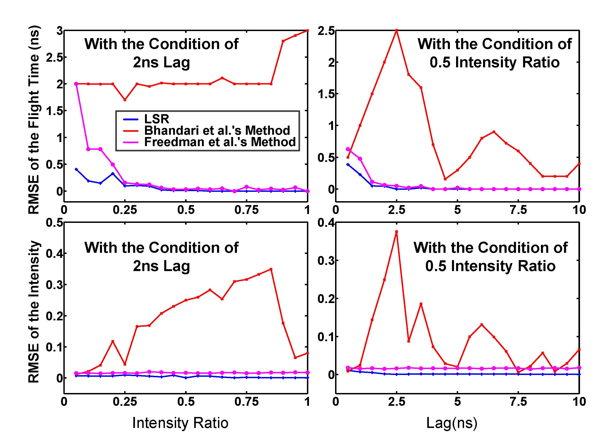

| Resolving transient time profile in ToF imaging via log-sum sparse regularization |
Hui Qiao,1 Jingyu Lin,1,2 Yebin Liu,1 Matthias B. Hullin,3 and Qionghai Dai1,* 1Deptartment of Automation, Tsinghua University, Beijing 100084, China 2College of Electrical Engineering, Guangxi University, Nanning 530004, China 3Institute of Computer Science II, University of Bonn, Bonn 53113, Germany *Corresponding author: qhdai@tsinghua.edu.cn |
|
Reconstructed transient image of the real scene. (a) The experimental setup. (b) The letters "THU". (c) Amplitude map. (d) Depth map. (e) First reflection of the transient image recovered by our LSR method. (f) Second reflections of the recovered transient images. (g) Recovered time profiles at point 1. |
Publications |
| Hui Qiao, Jingyu Lin, Yebin Liu, Matthias B. Hullin, and Qionghai Dai, Resolving transient time profile in ToF imaging via log-sum sparse regularization, Optics Letters (OL), 2015, 40(6): 918-921. |
Abstract |
| Multi-frequency time-of-flight (ToF) cameras have been used to recover the transient time profiles of optical responses such that multipath interference can be separated. The resolution of the recovered time profiles is limited by the highest modulation frequency. Here, we demonstrate a method based on log-sum sparsity regularization to recover transient time profiles of specular reflections. We show that it improves the ability of separating pulses better than the state-of-the-art regularization methods. As an application, we demonstrate the encoding and decoding of hidden images using mirror reflections. |
Files |
||||||||
Paper[pdf] |
|
|||||||
Bibtex |
@article{qiao2015resolving, |
Additional Information |
|
Fig. 1. (a) Working principle of the ToF camera. (b) Time profile of the received signal in specular case, comprising multiple pulses. |
|
Fig. 2. Decomposition results on noiseless synthetic data. (a) The ground truth of three-path MPI. (b) Decomposition result of LSR. (c) Decomposition result of Bhandari et al.’s model. (l0-norm regularization with 3-sparse knowledge). (d) Decomposition result of Freedman et al.’s model. (l1-norm regularization). (e) Decomposition result of Lin et al.’s model. (f) Decomposition result of Heide et al.’s model. |
|
Fig. 3. Simulation of two-path MPI in the presence of noise. (a) The error between the ground truth and the recovered time profile caused by noise. There are two types of error, namely flight time error and intensity error (||*||1 denotes the l1 norm). There is an example of ground truth with the condition of 1 ns lag and 0.8 intensity ratio. (b) and (c) RMSE of the flight time and RMSE of the intensity with our method. Run 20 times at each situation. |
|

Fig. 4. Comparison of transient time profile reconstruction methods. Run 20 times at each situation. |
Acknowlegements |
| This work was supported by the Project of NSFC (Nos. 61327902 and 61120106003). |
| BBNC Lab, Department of Automation, Tsinghua University - All rights reserved. Last updated: Tue, 12/26/2017 |